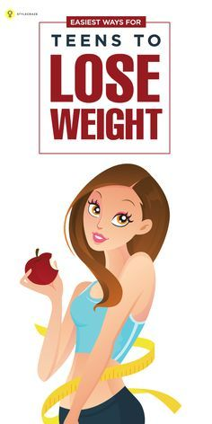

Allen Carr's Easyweigh to Lose Weight: The revolutionary method to losing weight fast from international bestselling author of The Easy Way to Stop Smoking: Amazon.co.uk: Carr, Allen: Books
 Skip to main content .co.uk Deliver to Czech Republic Hello, Sign in Account & Lists Returns & Orders 0 Basket All Prime Day Deals Best Sellers Prime Video New Releases Customer Service Prime Books Gift Ideas Home & Garden Vouchers Fashion Electronics Kindle Books Gift Cards & Top Up PC PC & Video Games Beauty Toys & Games Health & Personal Care Sports & Outdoors Baby Food & Grocery Car & Motorbike Pet Supplies Sell on Amazon Free Delivery Subscribe & Save Shopper Toolkit Home Improvement Disability Customer Support Books Advanced Search Best Sellers & more Top New Releases Deals in Books School Books Textbooks Books Outlet Children's Books Calendars & Diaries Audible Audiobooks Allen Carr's Easyweigh to Lose Weight and over 8 million other books are available for Amazon Kindle . Learn more University Textbooks › Medicine & Health Sciences › Medicine Kindle Edition£4.99
Paperback
£7.71
Other sellers and formats Sorry, there was a problem loading this page. Try again.
Buy new: £7.71 Dispatches from: Amazon Sold by: Amazon
Buy used: £1.00
New & Used (11) from £4.95 Share Embed Have one to sell? Sell on Amazon Flip to back Flip to front Listen Playing Paused You re listening to a sample of the Audible audio edition.Learn more See this image
Follow the author
Allen Carr + FollowSimilar authors to follow
+ + + See more recommendations Something went wrong. Please try your request again later.OK
Allen Carr s Easyweigh to Lose Weight: The revolutionary method to losing weight fast from international bestselling author of The Easy Way to Stop Smoking Paperback – 3 Jan. 2013
by Allen Carr (Author) › Visit Amazon's Allen Carr Page See search results for this author Allen Carr (Author) 3.7 out of 5 stars 1,030 ratings Note: This item is eligible for FREE click and collect without a minimum order. Details Pick up your parcel at a time and place that suits you. Choose from over 13,000 locations across the UK Prime members get unlimited deliveries at no additional cost How to order to an Amazon Pickup Location? Find your preferred location and add it to your address book Dispatch to this address when you check out Learn more Read more Read less Previous page Print length 224 pages Language English Publisher Penguin Publication date 3 Jan. 2013 Dimensions 19.8 x 1.4 x 12.9 cm ISBN-10 9780718194727 ISBN-13 978-0718194727 See all details Next pageSpecial offers and product promotions
Amazon Business : For business-exclusive pricing, quantity discounts and downloadable VAT invoices. Create a free account Buy this product and stream 90 days of Amazon Music Unlimited for free. E-mail after purchase. Conditions apply. Learn moreFrequently bought together
Customers who viewed this item also viewed
Page 1 of 1 Start over Page 1 of 1 Previous page Allen Carr's Easy Way to Stop Smoking: Read this book and you'll never smoke a cigarette again Allen Carr 4.5 out of 5 stars 4,701 Paperback #1 Best Seller in Treatments for Addictions £8.48 £ 8 . 48 Allen Carr's Easy Way to Quit Emotional Eating: Set yourself free from binge-eating and comfort-eating (Allen Carr's Easyway, 29) Allen Carr 4.4 out of 5 stars 366 Paperback £7.70 £ 7 . 70 The Easy Way for Women to Lose Weight (Allen Carr's Easyway) Allen Carr 4.1 out of 5 stars 628 Paperback £6.95 £ 6 . 95 Easy Way to Control Alcohol (Allen Carr's Easyway) Allen Carr 4.3 out of 5 stars 1,998 Paperback £6.29 £ 6 . 29 The Easy Way to Lose Weight (Allen Carr's Easyway) Allen Carr 3.9 out of 5 stars 306 Paperback £11.20 £ 11 . 20 Good Sugar Bad Sugar: Eat yourself free from sugar and carb addiction (Allen Carr's Easyway, 23) Allen Carr 4.3 out of 5 stars 432 Paperback £6.95 £ 6 . 95 Next pageProducts related to this item Sponsored Hide feedback
Page 1 of 1 Start over Page 1 of 1 Previous page of related Sponsored Products Feedback Just released Allen Carr s Easy Way to Quit Vaping: Get Free from JUUL, IQOS, Disposables, Tanks Allen Carr 14 Paperback £6.45 Feedback The Last Diet: Discover the Secret to Losing Weight – For Good Shahroo Izadi 245 Paperback £9.99 Feedback Get Your Sparkle Back: 10 Steps to Weight Loss and Overcoming Emotional Eating Silvana Siskov 34 Paperback £14.99 Feedback Hello New Me: A Daily Food and Exercise Journal to Help You Become the Best Version Happy Books Hub 4,897 Paperback £6.99 Feedback Intermittent Fasting Secrets 2 In 1: How To Lose Belly Fat And Keep It Off If You v Evelyn Whitbeck 6 Paperback £16.18 Feedback Slow Cooker: Weight Loss: Weight Loss, Healthy, Delicious, Easy Recipes: Cooking an Arianna Brooks 75 Paperback £14.99 Feedback Just released Endomorph Diet: The Ultimate Weight Loss Guide for Women and Men with the Endomorph Jena Ashley 6 Paperback £9.49 Feedback Nutrition: Understanding The Basics: Nutrition 101, Healthy Eating and Weight Loss Nicholas Bjorn 64 Paperback £13.99 Feedback The Sobriety Journal: To Feel Better Every Day (Sobriety Gifts for Women and Men) Joanne Edmund 15 Paperback £13.99 Feedback Keto Diet Journal for Women Over 40: 12 Month Challenge, Daily Meals & Weight Loss Blue Book Press 4 Paperback £5.64 Next page of related Sponsored ProductsEnter your mobile number or email address below and we'll send you a link to download the free Kindle App. Then you can start reading Kindle books on your smartphone, tablet, or computer - no Kindle device required.
Apple Android Windows Phone
To get the free app, enter your mobile phone number.
or See all free Kindle reading apps Start reading Allen Carr's Easyweigh to Lose Weight on your Kindle in under a minute .Don't have a Kindle? Get your Kindle here , or download a FREE Kindle Reading App .
Author Picks: Clare Balding
Discover the author's summer reading recommendations
Read the full article
Product details
ASIN : 0718194721 Publisher : Penguin (3 Jan. 2013) Language : English Paperback : 224 pages ISBN-10 : 9780718194727 ISBN-13 : 978-0718194727 Dimensions : 19.8 x 1.4 x 12.9 cm Best Sellers Rank: 37,273 in Books ( See Top 100 in Books ) 22 in Low Salt Diet 70 in Low Carb Diet 170 in Public Health & Preventive Medicine Customer reviews: 3.7 out of 5 stars 1,030 ratingsProducts related to this item Sponsored Hide feedback
Page 1 of 1 Start over Page 1 of 1 Previous page of related Sponsored Products Feedback Just released Allen Carr s Easy Way to Quit Vaping: Get Free from JUUL, IQOS, Disposables, Tanks Allen Carr 14 Paperback £6.45 Feedback The 10-Day Alcohol Detox Plan: Stop Drinking Easily & Safely (Self Help Book 1) Lewis David 546 Kindle Edition £3.99 Feedback Keto Diet Journal for Women Over 40: 12 Month Challenge, Daily Meals & Weight Loss Blue Book Press 4 Paperback £5.64 Feedback Alcohol and You - 21 Ways to Control and Stop Drinking: How to Give Up Your Addicti Lewis David 324 Paperback £10.47 Feedback Hello New Me: A Daily Food and Exercise Journal to Help You Become the Best Version Happy Books Hub 4,897 Paperback £6.99 Feedback Understanding Alcoholism as a Brain Disease: Book 2 of the ‘A Prescription for Alco Linda Burlison 46 Paperback £10.73 Feedback The Mental Toughness Handbook: A Step-By-Step Guide to Facing Life s Challenges, Ma Damon Zahariades 1,850 Paperback £8.99 Feedback The Fat-Loss Plan: 100 Quick and Easy Recipes with Workouts Joe Wicks 2,563 Paperback £12.32 Feedback Get Your Sparkle Back: 10 Steps to Weight Loss and Overcoming Emotional Eating Silvana Siskov 34 Paperback £14.99 Feedback Just released Endomorph Diet: The Ultimate Weight Loss Guide for Women and Men with the Endomorph Jena Ashley 6 Paperback £9.49 Next page of related Sponsored ProductsProduct description
About the Author
Allen Carr was an accountant who smoked 100 cigarettes a day until he discovered EASYWAY and went on to write a series of bestselling books, most famously The Easy Way to Stop Smoking. Now, over 13 million stop smoking books have been sold in 57 countries and 38 languages around the world. Allen's lasting legacy is a dynamic, on-going, global publishing programme which helps treat a range of issues including smoking, weight, alcohol and other drug addictions.Customers who bought this item also bought
Page 1 of 1 Start over Page 1 of 1 Previous page Next pageCustomer reviews
3.7 out of 5 stars 3.7 out of 5 1,030 global ratings 5 star 46% 4 star 15% 3 star 17% 2 star 9% 1 star 13% How are ratings calculated? To calculate the overall star rating and percentage breakdown by star, we don’t use a simple average. Instead, our system considers things like how recent a review is and if the reviewer bought the item on Amazon. It also analyses reviews to verify trustworthiness. Top reviews Most recent Top reviewsTop reviews from United Kingdom
There was a problem filtering reviews right now. Please try again later.
Amazon Customer 1.0 out of 5 stars Opinions presented as facts Reviewed in the United Kingdom on 21 March 2019 Verified Purchase I got this book because I'd read elsewhere that Allen Carr had unique and helpful ways of reframing issues around negative habits.I read the first half of the book in-depth, with mounting skepticism. It read like a conversation with a bloke down the pub. Allen freely admits he has no scientific of medical background, but I expected at least some reference to basic nutrition facts. Instead his entire argument is that we need to eat more like "Mother Nature intended" and he refers constantly to the assumed eating habits of various animals (elephants, guerillas and termites seem to be favourites).
I skimmed the second half, looking for a chapter or collection of bullet points outlining his method, and found only more animal comparisons and a few irrelevant details.
Things like advising to just eat fruit for breakfast will help a person lose weight if they are currently eating sugary breakfast cereals, or calorie-dense fry-ups, because three pieces of fruit represent less than 30% the calories! But the individual will be hungry again long before lunch
All diets work for two weeks, but fad diets are unsustainable in the long run. This is another fad diet, with its rules and guidelines based on unscientific assumptions presented with condescending rhetoric. Read more 16 people found this helpful Helpful Report abuse Amazon verified 5.0 out of 5 stars AWESOME Reviewed in the United Kingdom on 22 April 2018 Verified Purchase In this book there is s Margin level to bypass some of the suggestion so you don’t need to become vegan. This margin element you can treat yourself still with a little.
The book reaches places in your mind that other books have been unable to do.
It’s not magic but been described as magic by some, I love it and I can’t help but eat healthy as it’s instilled in my mind.
Allen Carrr is a genius
I can’t reccomend this book enough.
It shows we’ve been brain washed by the food industry and answers the question to the reason we are addicted to junk and how it happens and reversed everything I though were the reasons I was over eating.
For a few pound you can save fortunes on other weight loss methods that don’t work. Read more 24 people found this helpful Helpful Report abuse martina gates 5.0 out of 5 stars Stopped smoking with his previous book almost 30 years ago Reviewed in the United Kingdom on 18 January 2018 Verified Purchase Stopped smoking with his previous book almost 30 years ago and never looked back. His way of writing must trigger something hypnotic in my brain as it works for me. The key is to read over & over again and not put pressure on yourself to do anything too soon.. l still refer to it occasionally. Read more 29 people found this helpful Helpful Report abuse Literate Hamster 1.0 out of 5 stars Cannot recommend Reviewed in the United Kingdom on 22 October 2018 Verified Purchase If you’re impressed with his technique with respect to stopping smoking then you’re going to br be very disappointed with this. The difference, I believe, is that smoking is not necessary to life whereas eating food is. The book degenerates into some scientifically unproven dieting guidelines. If these cause you to be more mindful of what you’re eating and consequently more moderate in your intake then this book may help you, but there are many better and genuinely more helpful books about losing weight on the market. Read more 12 people found this helpful Helpful Report abuse Kindle Customer 1.0 out of 5 stars Sorry, I found this book to be boring, as if the author intended it to change the reader into a vegetarian. To make me discussed at myself for eating animals. I don't believe we have the inclination or the time, to indulge in eating plantation like the gorillas. I bought and read Allen Carr's Easyway to control your drinking, and it was a revelation and a " miracle" for me as I have stopped drinking now for 2 weeks, starting from the 1st of December. I intend to continue on over Christmas and New year, visiting family who will be drinking alcohol. I'm almost 70 years old, and feel i have been given a new start in life (better late than never) This book i would highly recommend!!! Reviewed in the United Kingdom on 17 December 2018 Verified Purchase Sorry, I found this book to be boring, as if the author digressed from the reason i bought the book ( to help me lose weight) to trying to convert me to vegetarism. I bought "Easy way to control your drinking" marvellous book, really works. I'm almost 70 haven't had a drink in 18days, starting from the 1st. December. Going into the" party season" and visiting family who "enjoy" a drink, I know that I can continue to remain sober because of the Easyway. Thanks for that, it goes to show, your never too old to learn. Please if you've had the same problem as me, give yourself the greatest gift you can for yourself and your family and buy the book. Read more 10 people found this helpful Helpful Report abuse anapal 5.0 out of 5 stars It works, I've lost weight! Reviewed in the United Kingdom on 24 August 2015 Verified Purchase I found this book very annoying at times BUT I have lost 16 kg (2,5 stones) and still losing. The best part is that I feel better. More energetic and my IBS symptoms are gone. I tried to lose weight more or less successfully for years but this helped me (hopefully for good) get rid of bad eating habits! Good luck! Read more 37 people found this helpful Helpful Report abuse Mandy 2.0 out of 5 stars The good stuff isn't new. The bad stuff is annoying. Reviewed in the United Kingdom on 1 March 2021 Verified Purchase I've given 2 stars for the bits that made sense to me:
1. The value of fruit not only to aid dugestion but also to wean you off processed sweet stuff. Fruit really is far more delicious if you give it a proper chance.
2. Food combining. This is not new and is otherwise known as the Hay Diet. It's explained much better by others. It's about eating different types of food (protien/carbohydrate/ fruit) separately with an appropriate gap to allow digestion. It really works to reduce upset tummy issues, discomfort and you will lose weight if only because of the care you're taking about what you're eating. It's not an original idea of Allen's though. It worked brilliantly for me in the past and having been reminded of it, I cant wait to do it again !
The things I didn't like about this book are all those mentioned elsewhere plus the god / creationist stuff. Read more 2 people found this helpful Helpful Report abuse The Seeker 4.0 out of 5 stars Rather misleading, but contains a lot of truths! Reviewed in the United Kingdom on 16 May 2021 Verified Purchase So basically you can eat as much as you want of whatever you like .so long as it's fruit, nuts and seeds. And if you don't like these, then you train yourself to like them, because they are what nature intended us to eat. I would agree in principle that these are the foods that are good for us, but the book is misleading when it keeps reiterating that we can eat as much as we want of whatever we like. It clearly isn't true. The book is also padded out with a lot of waffle, repeated, and some rather strange analogies. It's also written in quite an amateurish style. However, in spite of these criticisms, I agree with the principles, there is a lot of truth in his ideas, and I have found it useful to refer to from time to time when I find myself sliding into bad habits. Read more Helpful Report abuse See all reviews
Your recently viewed items and featured recommendations › View or edit your browsing history After viewing product detail pages, look here to find an easy way to navigate back to pages you are interested in.
Back to top Get to Know Us Careers About Us UK Modern Slavery Statement Sustainability Make Money with Us Sell on Amazon Sell on Amazon Business Sell on Amazon Handmade Sell on Amazon Launchpad Associates Programme Fulfilment by Amazon Seller Fulfilled Prime Advertise Your Products Independently Publish with Us Amazon Pay Host an Amazon Hub › See all Amazon Payment Methods Amazon Platinum Mastercard Amazon Classic Mastercard Amazon Money Store Gift Cards Amazon Currency Converter Payment Methods Help Shop with Points Top Up Your Account Top Up Your Account in Store Let Us Help You COVID-19 and Amazon Track Packages or View Orders Delivery Rates & Policies Amazon Prime Returns & Replacements Recycling Manage Your Content and Devices Amazon Mobile App Amazon Assistant Customer Service Australia Brazil Canada China France Germany India Italy Japan Mexico Netherlands Poland Singapore Spain Turkey United Arab Emirates United States Amazon Music
Stream millions
of songs AbeBooks
Books, art
& collectables ACX
Audiobook Publishing
Made Easy Amazon Web Services
Scalable Cloud
Computing Services Audible
Download Audiobooks Book Depository
Books With Free
Delivery Worldwide DPReview
Digital
Photography Goodreads
Book reviews
& recommendations Amazon Home Services
Experienced pros
Happiness Guarantee IMDb
Movies, TV
& Celebrities Kindle Direct Publishing
Indie Digital & Print Publishing
Made Easy Shopbop
Designer
Fashion Brands Amazon Warehouse
Deep Discounts
Open-Box Products Amazon Business
Service for
business customers Whole Foods Market
We Believe in
Real Food Amazon Second Chance
Pass it on, trade it in,
give it a second life Conditions of Use & Sale Privacy Notice Cookies Notice Interest-Based Ads Notice © 1996-2021, Amazon.com, Inc. or its affiliates